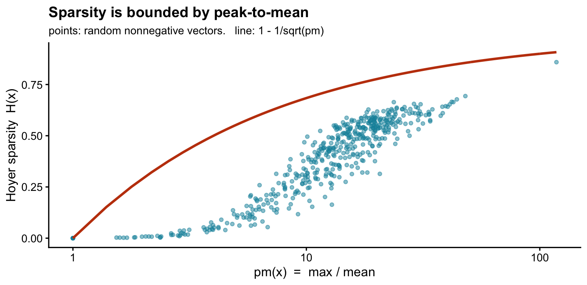
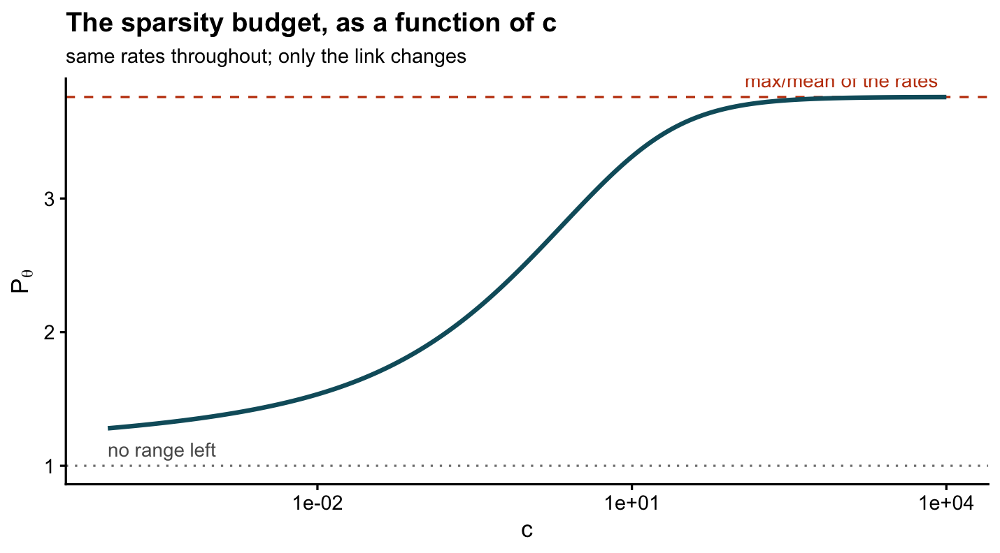
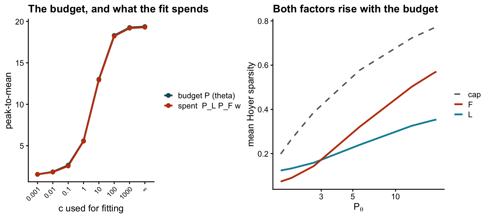

Why the sparsity of a log1p fit is decided by Y and c
2026-08-02
Last updated: 2026-08-04
Checks: 6 1
Knit directory: log1p_experiments/
This reproducible R Markdown analysis was created with workflowr (version 1.7.2). The Checks tab describes the reproducibility checks that were applied when the results were created. The Past versions tab lists the development history.
Great! Since the R Markdown file has been committed to the Git repository, you know the exact version of the code that produced these results.
Great job! The global environment was empty. Objects defined in the global environment can affect the analysis in your R Markdown file in unknown ways. For reproduciblity it’s best to always run the code in an empty environment.
The command set.seed(20240402) was run prior to running
the code in the R Markdown file. Setting a seed ensures that any results
that rely on randomness, e.g. subsampling or permutations, are
reproducible.
Great job! Recording the operating system, R version, and package versions is critical for reproducibility.
- A3-check
- stepB-columns
- stepB-hyperbola
- verify
To ensure reproducibility of the results, delete the cache directory
hoyer_sparsity_c_cache and re-run the analysis. To have
workflowr automatically delete the cache directory prior to building the
file, set delete_cache = TRUE when running
wflow_build() or wflow_publish().
Great job! Using relative paths to the files within your workflowr project makes it easier to run your code on other machines.
Great! You are using Git for version control. Tracking code development and connecting the code version to the results is critical for reproducibility.
The results in this page were generated with repository version 88c64a6. See the Past versions tab to see a history of the changes made to the R Markdown and HTML files.
Note that you need to be careful to ensure that all relevant files for
the analysis have been committed to Git prior to generating the results
(you can use wflow_publish or
wflow_git_commit). workflowr only checks the R Markdown
file, but you know if there are other scripts or data files that it
depends on. Below is the status of the Git repository when the results
were generated:
Ignored files:
Ignored: .DS_Store
Ignored: analysis/c_grid_sim_cache/
Ignored: analysis/hoyer_sparsity_c_cache/
Ignored: analysis/log1p_identifiability_cache/
Note that any generated files, e.g. HTML, png, CSS, etc., are not included in this status report because it is ok for generated content to have uncommitted changes.
These are the previous versions of the repository in which changes were
made to the R Markdown (analysis/hoyer_sparsity_c.Rmd) and
HTML (docs/hoyer_sparsity_c.html) files. If you’ve
configured a remote Git repository (see ?wflow_git_remote),
click on the hyperlinks in the table below to view the files as they
were in that past version.
| File | Version | Author | Date | Message |
|---|---|---|---|---|
| Rmd | 88c64a6 | Eric Weine | 2026-08-04 | State the Step B budget as a sum of Hoyer sparsities |
| html | 706c47c | Eric Weine | 2026-08-04 | Build site. |
| Rmd | f6db4f8 | Eric Weine | 2026-08-04 | Extend Step B: the budget in Hoyer units, and the one-column corollary |
| html | c7f6da4 | Eric Weine | 2026-08-04 | Build site. |
| Rmd | 4e965ab | Eric Weine | 2026-08-04 | Add a fitted-vs-true rates section to the c-grid notebook |
| html | 08b802f | Eric Weine | 2026-08-04 | Build site. |
| Rmd | bc83b6d | Eric Weine | 2026-08-04 | Write out the algebra in the Step B derivation |
| html | 55b9b9e | Eric Weine | 2026-08-03 | Build site. |
| Rmd | d50dabc | Eric Weine | 2026-08-03 | Clean up the notation on the Hoyer sparsity page |
| html | 17cefaf | Eric Weine | 2026-08-02 | Build site. |
| Rmd | 3167a7f | Eric Weine | 2026-08-02 | Add a page on Hoyer sparsity as a function of Y and c |
library(ggplot2); library(cowplot); library(log1pNMF)
theme_set(theme_cowplot(font_size = 11))
exp_dir <- path.expand("~/Documents/log1pNMF/inst/paper_figures/experiments")
cells_dir <- file.path(exp_dir, "c_grid_sim")
source(file.path(exp_dir, "c_grid_sim_common.R"))
## Hoyer sparsity of a nonnegative vector: 0 if all entries are equal, 1 if one
## entry carries everything.
hoyer <- function(x) { x <- abs(x); n <- length(x)
(sqrt(n) - sum(x)/sqrt(sum(x^2))) / (sqrt(n) - 1) }
## pm(): peak-to-mean. The ONLY summary used on this page. It takes a vector or
## a matrix and returns one number, so pm(L[, k]) is a column's peak-to-mean and
## pm(theta) is the whole matrix's.
pm <- function(x) max(x) / mean(x)The question
You have a count matrix \(Y\). You fit the log1p model at several values of \(c\). The factors come out visibly more or less sparse depending on which \(c\) you used, even though nothing about the data changed. What decides that?
This page answers exactly that, and nothing else. It is about Hoyer sparsity — a continuous measure that requires no exact zeros — expressed purely in terms of \(Y\) and \(c\).
The answer in one sentence. The Hoyer sparsity that \(L\) and \(F\) can achieve is jointly capped by the peak-to-mean ratio of \(\theta = \log(1+\lambda/c)\); the rates \(\lambda\) are fixed by \(Y\); and \(c\) alone slides that ratio between \(1\) and \(\lambda\)’s own peak-to-mean.
The rest of the page is that sentence in four steps.
Notation
Only one summary statistic appears on this page, applied to different things. For any nonnegative vector or matrix \(v\) with at least one positive entry,
\[ \operatorname{pm}(v) \;=\; \frac{\max(v)}{\operatorname{mean}(v)} \;\ge\; 1 , \]
the peak-to-mean ratio: how large the biggest entry is relative to a typical one. \(\operatorname{pm}(v) = 1\) exactly when \(v\) is constant.
The objects it gets applied to:
| symbol | shape | meaning |
|---|---|---|
| \(Y\) | \(n \times p\) | the observed counts |
| \(\lambda\) | \(n \times p\) | the rates, \(\mathbb{E}[Y]\) |
| \(\theta = \log(1+\lambda/c)\) | \(n \times p\) | the linear predictor |
| \(L\), \(F\) | \(n\times K\), \(p\times K\) | the factorization, \(\theta = LF'\) |
| \(\ell_{\cdot k}\) | length \(n\) | column \(k\) of \(L\) — every sample’s loading on factor \(k\) |
| \(f_{\cdot k}\) | length \(p\) | column \(k\) of \(F\) — every feature’s weight on factor \(k\) |
| \(\ell_{i\cdot}\) | length \(K\) | row \(i\) of \(L\) — sample \(i\)’s loadings across factors |
So \(\max(\ell_{\cdot k}) = \max_i \ell_{ik}\) is the largest loading any sample places on factor \(k\), and \(\operatorname{pm}(\ell_{\cdot k})\) is that divided by the average loading on factor \(k\). Hoyer sparsity is always computed per column and then averaged over the \(K\) columns, matching the earlier pages.
Step A: Hoyer sparsity is peak-to-mean in disguise
For a nonnegative vector \(x\) of length \(n\), Hoyer sparsity is
\[ H(x) = \frac{\sqrt{n} - \|x\|_1/\|x\|_2}{\sqrt{n}-1} . \]
Use \(\|x\|_2^2 = \sum_i x_i^2 \le \max(x)\sum_i x_i = \|x\|_\infty\|x\|_1\), and note \(\|x\|_1/\|x\|_\infty = n\,\operatorname{mean}(x)/\max(x) = n/\operatorname{pm}(x)\):
\[ \frac{\|x\|_1}{\|x\|_2} \;\ge\; \frac{\|x\|_1}{\sqrt{\|x\|_\infty\|x\|_1}} \;=\; \sqrt{\frac{\|x\|_1}{\|x\|_\infty}} \;=\; \sqrt{\frac{n}{\operatorname{pm}(x)}}, \]
and therefore
\[ \boxed{\;H(x) \;\le\; \frac{\sqrt{n}-\sqrt{n/\operatorname{pm}(x)}}{\sqrt{n}-1} \;\approx\; 1 - \frac{1}{\sqrt{\operatorname{pm}(x)}}\;} \]
In words: a vector can only be Hoyer-sparse if some of its entries stick far above its mean. If \(\operatorname{pm}(x) = 1\) every entry equals the mean, the vector is constant, and \(H(x) = 0\) — however many entries it has, and whether or not any of them are zero. Sparsity needs range, not zeros.
set.seed(1); n <- 500
sim <- do.call(rbind, lapply(seq(0, 1, length.out = 60), function(a) {
do.call(rbind, lapply(1:8, function(r) {
x <- (1 - a) + a * rexp(n)^2 # dial from constant to heavy-tailed
data.frame(pm = pm(x), H = hoyer(x)) }) ) }))
curve <- data.frame(pm = seq(1, max(sim$pm), length.out = 300))
curve$bound <- 1 - 1/sqrt(curve$pm)
ggplot(sim, aes(pm, H)) +
geom_point(colour = "#0E8FA8", alpha = 0.5, size = 1.2) +
geom_line(data = curve, aes(pm, bound), colour = "#C2410C", linewidth = 1) +
scale_x_log10() +
labs(x = "pm(x) = max / mean", y = "Hoyer sparsity H(x)",
title = "Sparsity is bounded by peak-to-mean",
subtitle = "points: random nonnegative vectors. line: 1 - 1/sqrt(pm)")
Step B: L and F share a single budget
The fit gives \(\theta = LF'\) with \(L, F \ge 0\). Fix one factor \(k\). Let \(i^\star\) be the sample achieving \(\max(\ell_{\cdot k})\) and \(j^\star\) the feature achieving \(\max(f_{\cdot k})\). Because every term of the sum is nonnegative, we may discard all but the \(k\)th:
\[ \max(\theta) \;\ge\; \theta_{i^\star j^\star} \;=\; \sum_{m=1}^{K}\ell_{i^\star m}\,f_{j^\star m} \;\ge\; \ell_{i^\star k}\,f_{j^\star k} \;=\; \max(\ell_{\cdot k})\cdot\max(f_{\cdot k}) . \]
For the mean, the double average factorizes across the sum over factors:
\[ \operatorname{mean}(\theta) = \frac{1}{np}\sum_{i,j}\sum_{m}\ell_{im}f_{jm} = \sum_{m}\Bigl(\frac{1}{n}\sum_i \ell_{im}\Bigr)\Bigl(\frac{1}{p}\sum_j f_{jm}\Bigr) = \sum_{m}\operatorname{mean}(\ell_{\cdot m})\operatorname{mean}(f_{\cdot m}). \]
Let
\[ w_k \;=\; \frac{\operatorname{mean}(\ell_{\cdot k})\operatorname{mean}(f_{\cdot k})}{\operatorname{mean}(\theta)} \;\in\;(0,1) \]
be the share of \(\operatorname{mean}(\theta)\) that factor \(k\) contributes; by the display above the \(w_k\) sum to one.
Now take the inequality \(\max(\theta)\ge\max(\ell_{\cdot k})\max(f_{\cdot k})\), divide both sides by \(\operatorname{mean}(\theta)\), and then multiply the right-hand side by \(\operatorname{mean}(\ell_{\cdot k})\operatorname{mean}(f_{\cdot k})\) over itself — which is just multiplying by \(1\) — and regroup the four factors:
\[ \begin{aligned} \operatorname{pm}(\theta) \;=\;\frac{\max(\theta)}{\operatorname{mean}(\theta)} &\;\ge\; \frac{\max(\ell_{\cdot k})\,\max(f_{\cdot k})}{\operatorname{mean}(\theta)} &&\text{(divide by }\operatorname{mean}(\theta)\text{)}\\[4pt] &\;=\; \frac{\max(\ell_{\cdot k})\,\max(f_{\cdot k})}{\operatorname{mean}(\theta)} \cdot\underbrace{\frac{\operatorname{mean}(\ell_{\cdot k})\operatorname{mean}(f_{\cdot k})} {\operatorname{mean}(\ell_{\cdot k})\operatorname{mean}(f_{\cdot k})}}_{=\,1} &&\text{(insert }1\text{)}\\[4pt] &\;=\; \underbrace{\frac{\max(\ell_{\cdot k})}{\operatorname{mean}(\ell_{\cdot k})}}_{\operatorname{pm}(\ell_{\cdot k})} \cdot\underbrace{\frac{\max(f_{\cdot k})}{\operatorname{mean}(f_{\cdot k})}}_{\operatorname{pm}(f_{\cdot k})} \cdot\underbrace{\frac{\operatorname{mean}(\ell_{\cdot k})\operatorname{mean}(f_{\cdot k})}{\operatorname{mean}(\theta)}}_{w_k} &&\text{(regroup)} . \end{aligned} \]
The middle step is the only trick, and it is not much of one: the two \(\operatorname{mean}\) terms are introduced solely so that each \(\max\) can be paired with the matching \(\operatorname{mean}\) to form a \(\operatorname{pm}\), with whatever is left over collecting into \(w_k\). Reading the chain end to end,
\[ \boxed{\;\operatorname{pm}(\ell_{\cdot k})\;\cdot\;\operatorname{pm}(f_{\cdot k})\;\cdot\;w_k \;\;\le\;\; \operatorname{pm}(\theta)\;} \qquad \text{for every factor } k . \]
Read \(\operatorname{pm}(\theta)\) as a budget: how much peak-to-mean the fitted \(\theta\) has available. The two factors’ peak-to-mean ratios enter multiplicatively against it, so
- they trade: at fixed \(\operatorname{pm}(\theta)\), making \(\ell_{\cdot k}\) more peaked forces \(f_{\cdot k}\) flatter;
- they are jointly capped: if \(\operatorname{pm}(\theta)\) is near \(1\) then neither can be peaked, since their product cannot exceed it.
Combined with Step A: if \(\theta\) has no range, neither factor can be Hoyer-sparse, and no optimizer or initialization can change that.
This also reconciles the two behaviours you may have noticed. Holding the data and \(c\) fixed and moving among equally-good factorizations slides along the budget constraint — a trade. Changing \(c\) moves the constraint itself — so both can rise together.
The same budget, written in Hoyer units
Step B constrains peak-to-mean; what you actually measure is Hoyer sparsity. The two are interchangeable, because Step A’s inequality can be read backwards. Define the density of a length-\(m\) nonnegative vector,
\[ d(x) \;=\; 1-\gamma_m H(x) \;=\; \frac{\|x\|_1}{\sqrt m\,\|x\|_2} \;\in\;\Bigl[\tfrac{1}{\sqrt m},\,1\Bigr], \qquad \gamma_m = 1-\frac{1}{\sqrt m}, \]
so \(d(x)\approx 1-H(x)\) for large \(m\). The second equality is worth pausing on: it is exact, and it says the density is nothing but the normalized \(\ell_1/\ell_2\) ratio, of which Hoyer sparsity is the affine rescaling onto \([0,1]\). That is why the results below are natively multiplicative in \(d\) — the budget is a product of norm ratios — and why restating them in Hoyer units costs a constant \(\gamma_m\) per column.
Solving the boxed inequality of Step A for \(\operatorname{pm}\) — it is an equivalence, not a weakening — gives
\[ H(x)\le\frac{\sqrt m-\sqrt{m/\operatorname{pm}(x)}}{\sqrt m-1} \iff \operatorname{pm}(x)\;\ge\;\frac{1}{d(x)^2} . \]
Apply that to \(\ell_{\cdot k}\) and to \(f_{\cdot k}\), multiply, and read Step B from the other end:
\[ \frac{1}{d(\ell_{\cdot k})^{2}\,d(f_{\cdot k})^{2}} \;\le\;\operatorname{pm}(\ell_{\cdot k})\operatorname{pm}(f_{\cdot k}) \;\le\;\frac{\operatorname{pm}(\theta)}{w_k} . \]
Taking square roots:
\[ d(\ell_{\cdot k})\cdot d(f_{\cdot k})\;\ge\;r_k, \qquad r_k \;=\; \sqrt{\frac{w_k}{\operatorname{pm}(\theta)}}, \qquad\text{for every factor } k . \]
This is Step B with nothing thrown away: a hyperbola in the \((H(\ell_{\cdot k}), H(f_{\cdot k}))\) plane, with the feasible region on the origin side of it. Both columns of a factor cannot be sparse at once, and lowering \(c\) — which lowers \(\operatorname{pm}(\theta)\), Step C — pulls the whole frontier toward the origin.
The budget as a sum of sparsities
The hyperbola is exact but reads awkwardly, because expanding it leaves a cross term,
\[ \gamma_n H(\ell_{\cdot k}) + \gamma_p H(f_{\cdot k}) - \gamma_n\gamma_p\,H(\ell_{\cdot k})H(f_{\cdot k}) \;\le\; 1-r_k . \]
Ask instead the question the picture suggests: how large can the two sparsities be added together? Substitute \(u=d(\ell_{\cdot k})\), \(v=d(f_{\cdot k})\), so that \(H(\ell_{\cdot k})=(1-u)/\gamma_n\) and likewise for \(v\), and the constraint is just \(uv\ge r_k\) on \(u,v\in(0,1]\). Then by the weighted AM–GM inequality
\[ \frac{u}{\gamma_n}+\frac{v}{\gamma_p}\;\ge\;2\sqrt{\frac{uv}{\gamma_n\gamma_p}}\;\ge\;2\sqrt{\frac{r_k}{\gamma_n\gamma_p}}, \]
and since \(H(\ell_{\cdot k})+H(f_{\cdot k}) = 1/\gamma_n+1/\gamma_p-(u/\gamma_n+v/\gamma_p)\),
\[ \boxed{\;H(\ell_{\cdot k}) + H(f_{\cdot k}) \;\le\; \frac{1}{\gamma_n}+\frac{1}{\gamma_p}-\frac{2\sqrt{r_k}}{\sqrt{\gamma_n\gamma_p}} \;\xrightarrow[\;n,p\to\infty\;]{}\; 2\left(1-\Bigl(\frac{w_k}{\operatorname{pm}(\theta)}\Bigr)^{1/4}\right)\;} \]
Here \(n=p=300\), so \(\gamma_n=\gamma_p=\gamma=0.9423\) and the bound is simply \(\tfrac{2}{\gamma}\bigl(1-\sqrt{r_k}\bigr)=2.123\,(1-\sqrt{r_k})\). This is the statement to remember: the two columns of a factor split a single sparsity allowance, and \(c\) sets how large that allowance is.
Two things make it worth preferring to the hyperbola in practice.
It gives up nothing. AM–GM is an equality at \(u=v\), and that point is feasible, so the right-hand side is the exact maximum of \(H(\ell_{\cdot k})+H(f_{\cdot k})\) over the constraint set — the sharpest statement that exists about the sum, not a relaxation of the hyperbola. The only information discarded is how the total gets split between the two columns, and the bound is attained whenever they are equally sparse.
It is much stronger than the one-column corollary below. Halving it gives an average per column, which the table shows carries less than half the slack of the cap obtained by discarding \(d(f_{\cdot k})\) outright.
Corollary: a bound on one column at a time
Since \(d(f_{\cdot k})\le 1\), drop it:
\[ H(\ell_{\cdot k})\;\le\;\frac{1-\sqrt{w_k/\operatorname{pm}(\theta)}}{1-1/\sqrt n} \;\approx\;1-\sqrt{\frac{w_k}{\operatorname{pm}(\theta)}}, \]
and symmetrically for \(f_{\cdot k}\). This is the upper half of the appendix sandwich. It is a genuine theorem about a single column, but it is much weaker than the hyperbola, and the \(w_k\) cannot be removed: take \(K=2\) with a flat dominant factor plus a vanishing spike, \(\ell_{\cdot 2}=\varepsilon e_1\), \(f_{\cdot 2}=\varepsilon e_1\). Then \(\operatorname{pm}(\theta)\to 1\) while \(\operatorname{pm}(\ell_{\cdot 2})=n\); the factor stays admissible only because \(w_2\to 0\) with it.
Averaging the corollary over \(k\) and using \(\sqrt{w_k}\ge w_k\), so that \(\sum_k\sqrt{w_k}\ge\sum_k w_k=1\), removes \(w\) entirely and bounds the quantity the simulation figures actually plot:
\[ \frac1K\sum_{k}H(\ell_{\cdot k})\;\;\le\;\;1-\frac{1}{K\sqrt{\operatorname{pm}(\theta)}} . \]
The observed \(\sum_k\sqrt{w_k}\) is \(1.73=\sqrt3=\sqrt K\) almost exactly — the equal-shares value — so in practice the \(K\) in the denominator behaves like \(\sqrt K\). That is an observation about these fits, not a theorem.
How much is lost going from the pair to one column
All 640 cells, both initializations, \(K=3\): 3,840 factor-columns.
dens <- function(x) 1 - hoyer(x) * (1 - 1/sqrt(length(x)))
col <- do.call(rbind, lapply(list.files(cells_dir, "\\.rds$", full.names = TRUE),
function(f) {
x <- readRDS(f)
do.call(rbind, lapply(names(x$fits), function(init) {
L <- x$fits[[init]]$LL; Fm <- x$fits[[init]]$FF
th <- tcrossprod(L, Fm) # pm and H are both scale invariant,
w <- colMeans(L) * colMeans(Fm) # so the alpha rescaling is irrelevant
data.frame(c_fit = x$rows$c_fit[1], init = init, k = seq_len(ncol(L)),
pm_theta = pm(th), w = w / sum(w),
HL = apply(L, 2, hoyer), HF = apply(Fm, 2, hoyer),
dL = apply(L, 2, dens), dF = apply(Fm, 2, dens),
pmL = apply(L, 2, pm), pmF = apply(Fm, 2, pm))
}))
}))
gam <- 1 - 1/sqrt(300) # n = p = 300 throughout
col$rhs <- sqrt(col$w / col$pm_theta) # r_k, the hyperbola bound
col$capL <- (1 - col$rhs) / gam # the one-column cap
col$capS <- pmin(2, (2/gam) * (1 - sqrt(col$rhs))) # the sum-form cap
qs <- function(v) sprintf("%.2f (%.2f – %.2f)", median(v), min(v), max(v))
knitr::kable(data.frame(
quantity = c("Step B itself: pm(theta) / [pm(l) pm(f) w]",
"w_k, the per-factor price (1/K = 0.33)",
"pm(f_.k), discarded to reach one column",
"hyperbola slack: d(l) d(f) / r_k",
"sum-form slack: cap - [H(l) + H(f)] (Hoyer units)",
"|H(l_.k) - H(f_.k)|, where the sum form is exact at 0",
"one-column slack: cap - H(l_.k) (Hoyer units)"),
`median (min – max)` = c(
qs(col$pm_theta / (col$pmL * col$pmF * col$w)), qs(col$w), qs(col$pmF),
qs(col$dL * col$dF / col$rhs), qs(col$capS - col$HL - col$HF),
qs(abs(col$HL - col$HF)), qs(col$capL - col$HL)),
check.names = FALSE), row.names = FALSE)| quantity | median (min – max) |
|---|---|
| Step B itself: pm(theta) / [pm(l) pm(f) w] | 1.09 (1.00 – 1.94) |
| w_k, the per-factor price (1/K = 0.33) | 0.33 (0.10 – 0.76) |
| pm(f_.k), discarded to reach one column | 7.79 (1.54 – 19.96) |
| hyperbola slack: d(l) d(f) / r_k | 2.04 (1.38 – 3.36) |
| sum-form slack: cap - [H(l) + H(f)] (Hoyer units) | 0.47 (0.31 – 0.73) |
| |H(l_.k) - H(f_.k)|, where the sum form is exact at 0 | 0.16 (0.00 – 0.34) |
| one-column slack: cap - H(l_.k) (Hoyer units) | 0.56 (0.31 – 0.63) |
cat("violations — hyperbola:", sum(col$dL * col$dF < col$rhs - 1e-9),
" sum form:", sum(col$HL + col$HF > col$capS + 1e-9),
" one-column L:", sum(col$HL > col$capL + 1e-9),
" one-column F:", sum(col$HF > col$capL + 1e-9), "of", nrow(col), "\n")violations — hyperbola: 0 sum form: 0 one-column L: 0 one-column F: 0 of 3840
Warning: The above code chunk cached its results, but
it won’t be re-run if previous chunks it depends on are updated. If you
need to use caching, it is highly recommended to also set
knitr::opts_chunk$set(autodep = TRUE) at the top of the
file (in a chunk that is not cached). Alternatively, you can customize
the option dependson for each individual chunk that is
cached. Using either autodep or dependson will
remove this warning. See the
knitr cache options for more details.
Read the table top to bottom and the accounting is complete. Step B is nearly an equality on real fits — median slack 1.09, minimum 1.00 — so the budget argument is not merely true, it is spent. \(w_k\) behaves: it sits at \(1/K\), so going per-factor costs a clean factor of \(K\) and nothing worse. Everything else is the third row: the only route from a statement about the pair to a statement about one column is to discard \(\operatorname{pm}(f_{\cdot k})\ge 1\), and on these fits that throws away a factor of about eight. That is why the one-column bound carries 0.56 of slack in Hoyer units while the hyperbola carries a factor of two — and the factor of two that remains is Step A’s slack, not the budget argument’s.
The sum form sits where you would want it: 0.47 of slack on the pair, so 0.23 per column, against 0.56 for the one-column cap. And the columns stay reasonably near the diagonal \(H(\ell_{\cdot k})=H(f_{\cdot k})\) where the sum bound is attained — median separation 0.16 — so little is lost by declining to say how the allowance is split.
pA <- ggplot(col, aes(rhs, dL * dF)) +
geom_abline(slope = 1, intercept = 0, colour = "#C2410C", linewidth = 0.9) +
geom_point(colour = "#0E8FA8", alpha = 0.25, size = 0.9) +
scale_x_log10() + scale_y_log10() +
labs(x = "sqrt(w_k / pm(theta)) — the bound",
y = "d(l) x d(f) — the fit",
title = "Every column obeys the hyperbola",
subtitle = "3,840 factor-columns; points must lie above the line")
fmtc <- function(v) ifelse(is.infinite(v), "∞",
format(v, scientific = FALSE, trim = TRUE, drop0trailing = TRUE))
SHOW <- c(1e-3, 1, 100, Inf)
sub <- col[col$c_fit %in% SHOW, ]
sub$panel <- factor(paste("c_fit =", fmtc(sub$c_fit)),
levels = paste("c_fit =", fmtc(SHOW)))
stopifnot(!any(is.na(sub$panel)))
frontier <- do.call(rbind, lapply(levels(sub$panel), function(p) {
r <- median(sub$rhs[sub$panel == p])
hl <- seq(0, 0.995, length.out = 400); d <- 1 - hl * gam
data.frame(panel = factor(p, levels = levels(sub$panel)), HL = hl,
HF = (1 - r/d) / gam, cap_sum = (2/gam) * (1 - sqrt(r)))
}))
touch <- unique(frontier[, c("panel", "cap_sum")]) # tangency, on H(l)=H(f)
touch$HL <- touch$HF <- touch$cap_sum / 2
pB <- ggplot(sub, aes(HL, HF)) +
geom_abline(data = frontier, aes(slope = -1, intercept = cap_sum),
colour = "#0E5C6B", linetype = "dashed", linewidth = 0.7) +
geom_line(data = frontier, colour = "#C2410C", linewidth = 0.9) +
geom_point(data = touch, shape = 21, size = 2.6, stroke = 0.9,
colour = "#0E5C6B", fill = "white") +
geom_point(colour = "#0E8FA8", alpha = 0.4, size = 0.9) +
facet_wrap(~ panel, nrow = 1) +
coord_cartesian(xlim = c(0, 0.8), ylim = c(0, 0.9)) +
labs(x = "H(l_.k)", y = "H(f_.k)",
title = "The frontier moves out as c grows",
subtitle = "solid: the hyperbola. dashed: the sum form, touching it at the open circle")
plot_grid(pA, pB, nrow = 2)
Warning: The above code chunk cached its results, but
it won’t be re-run if previous chunks it depends on are updated. If you
need to use caching, it is highly recommended to also set
knitr::opts_chunk$set(autodep = TRUE) at the top of the
file (in a chunk that is not cached). Alternatively, you can customize
the option dependson for each individual chunk that is
cached. Using either autodep or dependson will
remove this warning. See the
knitr cache options for more details.
The lower row is the picture worth keeping. The feasible region is the area below each solid curve; only \(c\) moves it. At \(c=10^{-3}\) the frontier is pinched into the corner and the fits sit right against it — there is no sparser factorization to find. By \(c=100\) the frontier has swung out and the fits, now much sparser in absolute terms, are no longer anywhere near it. The dashed line is the sum form: a line of slope \(-1\) touching the hyperbola exactly on the diagonal, which is the geometric content of “it gives up nothing about the sum.”
Step C: c is what sets the budget
Here is the crux. \(\theta\) is not free; it is the rates seen through the link, \(\theta = \log(1+\lambda/c)\). Take five rates and never change them, then look at what \(c\) does to their peak-to-mean:
lam <- c(0.1, 0.5, 1, 5, 20)
cs <- c(1e-3, 1e-2, 1e-1, 1, 10, 100, 1e3, Inf)
knitr::kable(do.call(rbind, lapply(cs, function(cc) {
th <- if (is.infinite(cc)) lam else log1p(lam/cc)
data.frame(c = format(cc),
`theta = log1p(lambda/c)` = paste(sprintf("%.3g", th), collapse = " "),
`pm(theta)` = pm(th),
`sparsity cap 1-1/sqrt(pm)` = 1 - 1/sqrt(pm(th)),
check.names = FALSE) })),
digits = 3, row.names = FALSE,
caption = "The same five rates in every row. Only c changes.")| c | theta = log1p(lambda/c) | pm(theta) | sparsity cap 1-1/sqrt(pm) |
|---|---|---|---|
| 0.001 | 4.62 6.22 6.91 8.52 9.9 | 1.369 | 0.145 |
| 0.01 | 2.4 3.93 4.62 6.22 7.6 | 1.535 | 0.193 |
| 0.1 | 0.693 1.79 2.4 3.93 5.3 | 1.878 | 0.270 |
| 1 | 0.0953 0.405 0.693 1.79 3.04 | 2.524 | 0.371 |
| 10 | 0.00995 0.0488 0.0953 0.405 1.1 | 3.313 | 0.451 |
| 100 | 0.001 0.00499 0.00995 0.0488 0.182 | 3.690 | 0.479 |
| 1000 | 0.0001 0.0005 0.001 0.00499 0.0198 | 3.752 | 0.484 |
| Inf | 0.1 0.5 1 5 20 | 3.759 | 0.484 |
The rates never move; their own peak-to-mean is \(\operatorname{pm}(\lambda) = 3.76\). But the budget the fit actually receives runs from about 1.37 at \(c=10^{-3}\) up to 3.76 at \(c=\infty\), and the sparsity cap roughly triples with it.
Why. For \(c\) well below the rates, \(\log(1+\lambda/c)\approx \log(1/c) + \log\lambda\): every entry picks up the same large additive constant \(\log(1/c)\), and a shared additive constant is exactly what destroys peak-to-mean. For \(c\) well above the rates, \(\log(1+\lambda/c)\approx\lambda/c\), a pure rescaling, which leaves peak-to-mean untouched. Formally, writing \(\theta_c = \log(1+\lambda/c)\),
\[ \operatorname{pm}(\theta_c)\;\xrightarrow[c\to 0]{}\;1, \qquad \operatorname{pm}(\theta_c) - 1 \;\approx\; \frac{\log\max(\lambda)-\operatorname{mean}(\log\lambda)}{\log(1/c)}, \qquad \operatorname{pm}(\theta_c)\;\xrightarrow[c\to\infty]{}\;\operatorname{pm}(\lambda). \]
grid <- 10^seq(-4, 4, length.out = 200)
d <- data.frame(c = grid, pm = sapply(grid, function(cc) pm(log1p(lam/cc))))
ggplot(d, aes(c, pm)) +
geom_hline(yintercept = pm(lam), linetype = "dashed", colour = "#C2410C") +
geom_hline(yintercept = 1, linetype = "dotted", colour = "grey50") +
geom_line(colour = "#0E5C6B", linewidth = 1) +
scale_x_log10() +
annotate("text", x = 1e3, y = pm(lam), vjust = -0.7, size = 3.2,
colour = "#C2410C", label = "pm(lambda)") +
annotate("text", x = 1e-4, y = 1, vjust = -0.7, hjust = 0, size = 3.2,
colour = "grey35", label = "no range left") +
labs(x = "c", y = "pm(theta)",
title = "The sparsity budget, as a function of c",
subtitle = "same rates throughout; only the link changes")
Step D: the rates come from Y, not from c
The last link is what lets us treat \(\lambda\) as given. The Poisson log-likelihood is
\[ \ell(\lambda) = \sum_{ij}\bigl[y_{ij}\log\lambda_{ij}-\lambda_{ij}\bigr] - \sum_{ij}\log y_{ij}!, \]
which contains no \(c\) anywhere. \(c\) appears only in the feasible set — which rate matrices are reachable, namely those for which \(\log(1+\lambda/c)\) has nonnegative rank \(K\). So \(c\) does not change what a good set of rates is; the fitted rates are governed by \(Y\).
That means \(\lambda\) can be estimated from \(Y\) before fitting anything, and for this purpose the crudest estimate is enough — the rank-1 independence model
\[ m_{ij} = \frac{y_{i\cdot}\,y_{\cdot j}}{y_{\cdot\cdot}} . \]
The recipe
Given \(Y\) and a candidate \(c\), with no model fitted:
- \(m_{ij} = y_{i\cdot}y_{\cdot j}/y_{\cdot\cdot}\)
- compute \(\operatorname{pm}\bigl(\log(1+m/c)\bigr)\)
- the joint sparsity cap is \(\approx 1 - 1/\sqrt{\operatorname{pm}}\), shared between \(L\) and \(F\)
If \(\operatorname{pm}\) comes out near 1, sparse factors are unavailable at that \(c\), and whatever sparsity a fit reports is an artifact of the optimizer’s path.
sparsity_budget <- function(Y, c) {
m <- outer(rowSums(Y), colSums(Y)) / sum(Y) # rank-1 estimate of the rates
th <- if (is.infinite(c)) m else log1p(m / c)
c(pm_theta = pm(th), cap = 1 - 1/sqrt(pm(th)))
}
Y <- sim_dataset(1, 1)$Y # any count matrix
round(t(sapply(C_GRID, function(cc) c(c = cc, sparsity_budget(Y, cc)))), 3) c pm_theta cap
[1,] 1e-03 1.413 0.159
[2,] 1e-02 1.625 0.215
[3,] 1e-01 2.185 0.324
[4,] 1e+00 4.029 0.502
[5,] 1e+01 8.115 0.649
[6,] 1e+02 10.775 0.695
[7,] 1e+03 11.244 0.702
[8,] Inf 11.301 0.703Does it hold on real fits?
Against the 640 fits from the c-grid simulation. The Step B inequality should never be violated, and if the argument is explanatory rather than merely true it should be roughly tight — the optimizer should spend what it is given.
ver <- do.call(rbind, lapply(C_GRID, function(cf) {
r <- do.call(rbind, lapply(1:10, function(sd) {
Yd <- sim_dataset(sd, 1)$Y
x <- readRDS(file.path(cells_dir, paste0(
tag_of(list(seed = sd, c_true = 1, c_fit = cf)), ".rds")))
L <- x$fits$rank1$LL; Fm <- x$fits$rank1$FF
th <- tcrossprod(L, Fm) / max(1, if (is.infinite(cf)) 1 else cf)
w <- colMeans(L) * colMeans(Fm); w <- w / sum(w)
pmL <- apply(L, 2, pm) # pm(l_.k) for each factor k
pmF <- apply(Fm, 2, pm) # pm(f_.k) for each factor k
c(`pm predicted from Y,c` = unname(sparsity_budget(Yd, cf)["pm_theta"]),
`pm(theta) of the fit` = pm(th),
`pm(l)pm(f)w, worst k` = max(pmL * pmF * w),
`mean H(l_.k)` = mean(apply(L, 2, hoyer)),
`mean H(f_.k)` = mean(apply(Fm, 2, hoyer)),
violations = sum(pmL * pmF * w > pm(th) * (1 + 1e-8)))
}))
as.data.frame(t(c(c_fit = cf, colMeans(r))))
}))
knitr::kable(ver, digits = c(3, 2, 2, 2, 3, 3, 0), row.names = FALSE)| c_fit | pm predicted from Y,c | pm(theta) of the fit | pm(l)pm(f)w, worst k | mean H(l_.k) | mean H(f_.k) | violations |
|---|---|---|---|---|---|---|
| 1e-03 | 1.40 | 1.56 | 1.54 | 0.124 | 0.074 | 0 |
| 1e-02 | 1.60 | 1.85 | 1.82 | 0.133 | 0.090 | 0 |
| 1e-01 | 2.14 | 2.66 | 2.56 | 0.159 | 0.144 | 0 |
| 1e+00 | 3.90 | 5.59 | 5.54 | 0.240 | 0.321 | 0 |
| 1e+01 | 7.67 | 13.01 | 12.93 | 0.326 | 0.503 | 0 |
| 1e+02 | 10.04 | 18.30 | 18.22 | 0.350 | 0.562 | 0 |
| 1e+03 | 10.45 | 19.26 | 19.18 | 0.353 | 0.570 | 0 |
| Inf | 10.50 | 19.38 | 19.30 | 0.354 | 0.571 | 0 |
Warning: The above code chunk cached its results, but
it won’t be re-run if previous chunks it depends on are updated. If you
need to use caching, it is highly recommended to also set
knitr::opts_chunk$set(autodep = TRUE) at the top of the
file (in a chunk that is not cached). Alternatively, you can customize
the option dependson for each individual chunk that is
cached. Using either autodep or dependson will
remove this warning. See the
knitr cache options for more details.
Three things to check in that table.
The inequality is never violated, as it must not be, being an identity plus nonnegativity.
It is tight. The pm(l)pm(f)w column
sits just under pm(theta) of the fit in every row. The fits
use their whole budget, which is what makes the bound explanatory: at
small \(c\) the optimizer is not
failing to find sparse factors, there are none to find.
The budget predicted from \(Y\) and \(c\) alone tracks the realized one, so the whole chain can be evaluated before fitting.
lab <- ifelse(is.infinite(ver$c_fit), "∞",
format(ver$c_fit, scientific = FALSE, trim = TRUE, drop0trailing = TRUE))
ver$cf <- factor(lab, levels = lab)
long <- rbind(
data.frame(cf = ver$cf, what = "budget: pm(theta)", v = ver$`pm(theta) of the fit`),
data.frame(cf = ver$cf, what = "spent: pm(l)pm(f)w", v = ver$`pm(l)pm(f)w, worst k`))
p1 <- ggplot(long, aes(cf, v, colour = what, group = what)) +
geom_line(linewidth = 1) + geom_point(size = 2) +
scale_colour_manual(values = c("#0E5C6B", "#C2410C"), name = NULL) +
labs(x = "c used for fitting", y = "peak-to-mean",
title = "The budget, and what the fit spends") +
theme(axis.text.x = element_text(angle = 45, hjust = 1, size = 8),
legend.text = element_text(size = 8))
p2 <- ggplot(ver, aes(`pm(theta) of the fit`)) +
geom_line(aes(y = `mean H(l_.k)`, colour = "H(l)"), linewidth = 1) +
geom_line(aes(y = `mean H(f_.k)`, colour = "H(f)"), linewidth = 1) +
geom_line(aes(y = 1 - 1/sqrt(`pm(theta) of the fit`), colour = "cap"),
linetype = "dashed", linewidth = 0.8) +
scale_colour_manual(values = c(`H(l)` = "#0E8FA8", `H(f)` = "#C2410C",
cap = "grey40"), name = NULL) +
scale_x_log10() +
labs(x = "pm(theta)", y = "mean Hoyer sparsity",
title = "Both factors rise with the budget")
plot_grid(p1, p2, nrow = 1)
What to do with this
- Compute
sparsity_budget(Y, c)before you fit. It costs nothing and tells you whether sparse factors are even available at that \(c\). - Do not compare sparsity across \(c\). “The \(c=0.01\) factors are denser than the \(c=10\) factors” is a statement about \(\log(1+\cdot/c)\), not about the data: the budgets differ, so the comparison is meaningless.
- Do compare quantities that depend on \(LF'\) — fitted rates, held-out log-likelihood, which samples resemble which. Those do not depend on how the budget was split.
- If sparsity matters scientifically, impose it. The likelihood will not choose it for you; only a penalty, a prior, or an anchor assumption will.
A companion page, Non-identifiability of the log1p factorization, covers the other half: for a fixed budget, exactly which factorizations are equally likely, and how sparsity moves between \(L\) and \(F\) along that constraint.
Appendix: a two-sided bound on sparsity
Nothing above depends on this section. The upper bound is the result of the page; this appendix states the full two-sided version and proves the half that has not been proved yet. The lower half turns out to be valid but weak, so it is best read as a statement about what is possible, not about what happens.
The sandwich
Throughout, \(\theta = LF'\) with \(L, F\ge 0\) of rank \(K\), and
\[ w_k \;=\; \frac{\operatorname{mean}(\ell_{\cdot k})\operatorname{mean}(f_{\cdot k})}{\operatorname{mean}(\theta)}, \qquad \sum_k w_k = 1 , \]
as in Step B. Define, for a target peak-to-mean \(P\) and a length \(m\),
\[ H_{\min}(P,m) \;=\; \frac{\sqrt{m}-m\big/\sqrt{P^{2}+(m-1)q^{2}}}{\sqrt{m}-1}, \qquad q=\frac{m-P}{m-1}, \qquad\text{so}\qquad H_{\min}(P,m)\approx 1-\frac{1}{\sqrt{1+P^{2}/m}} . \]
Sandwich. For any nonnegative factorization \(\theta = LF'\),
(upper — proved in Steps A and B) for every factor \(k\) and both sides, \[ H(\ell_{\cdot k}) \;\le\; 1-\sqrt{\frac{w_k}{\operatorname{pm}(\theta)}}, \qquad H(f_{\cdot k}) \;\le\; 1-\sqrt{\frac{w_k}{\operatorname{pm}(\theta)}} ; \]
(lower — proved below) for at least one factor \(k\), \[ \max\bigl\{H(\ell_{\cdot k}),\,H(f_{\cdot k})\bigr\} \;\ge\; H_{\min}\!\bigl(\sqrt{\operatorname{pm}(\theta)},\;\max(n,p)\bigr) . \]
Both bounds are increasing in \(\operatorname{pm}(\theta)\).
The two halves say different things, and the quantifiers matter. The upper half constrains every column: nothing can be sparser than this. The lower half constrains some column: at least one side of one factor must be at least this sparse. Raising \(c\) raises \(\operatorname{pm}(\theta)\) and so lifts both ends of the band, which is the formal counterpart of the rising lower envelope seen in the simulations.
The upper half needs no new work: it is the one-column corollary proved at the end of Step B, where the stronger hyperbola form \(d(\ell_{\cdot k})d(f_{\cdot k})\ge\sqrt{w_k/\operatorname{pm}(\theta)}\) and the cost of weakening it to a single column are also given.
The rest of this appendix proves the lower half, in two lemmas.
Lemma 1: the least sparse a vector can be at a given peak-to-mean
For nonnegative \(x\) of length \(m\) with \(\operatorname{pm}(x)=P\), \[H(x)\;\ge\;H_{\min}(P,m),\] with equality for \(x^\star=(P,q,\dots,q)\), \(q=(m-P)/(m-1)\).
Proof. \(H\) is a decreasing function of \(\|x\|_1/\|x\|_2\), so minimising \(H\) means minimising \(\|x\|_2\). Both \(H\) and \(\operatorname{pm}\) are scale invariant, so normalise \(\operatorname{mean}(x)=1\); then \(\|x\|_1=m\) is fixed and the constraint \(\operatorname{pm}(x)=P\) says \(\max(x)=P\).
One coordinate is therefore pinned at \(P\), contributing \(P^2\) to \(\|x\|_2^2\) regardless. The remaining \(m-1\) coordinates are nonnegative and must sum to \(m-P\), and among vectors with a fixed sum the squared norm \(\sum_{i\ge 2}x_i^2\) is minimised when all entries are equal — by Cauchy–Schwarz, \(\sum_{i\ge2}x_i^2\ge\bigl(\sum_{i\ge2}x_i\bigr)^2/(m-1)\), with equality exactly when they are. That common value is \(q=(m-P)/(m-1)\), which satisfies \(0\le q\le P\) for every \(1\le P\le m\), so \(x^\star\) is feasible and \(P\) really is its maximum. Substituting \(\|x\|_1=m\) and \(\|x\|_2^2=P^2+(m-1)q^2\) into the definition of \(H\) gives \(H_{\min}(P,m)\). \(\square\)
Note the shape. Step A’s upper bound involves \(P\); this lower bound involves \(P^{2}/m\). A lone spike among many coordinates barely moves \(\ell_1/\ell_2\), so the lower bound only becomes interesting once \(P\) approaches \(\sqrt{m}\).
Hmin <- function(P, m) { q <- (m - P)/(m - 1)
(sqrt(m) - m/sqrt(P^2 + (m-1)*q^2)) / (sqrt(m) - 1) }
set.seed(1); m <- 400
knitr::kable(do.call(rbind, lapply(c(2, 10, 50, 200), function(P) {
best <- Inf # random x with pm exactly P: mean 1, one entry P
for (rep in 1:8000) {
y <- rexp(m - 1)^runif(1, 0.2, 4); y <- y/sum(y)*(m - P)
if (max(y) > P) next
best <- min(best, hoyer(c(P, y)))
}
data.frame(P = P, `H_min(P, m)` = Hmin(P, m),
`H of x-star` = hoyer(c(P, rep((m - P)/(m - 1), m - 1))),
`best of 8000 random` = best, check.names = FALSE)
})), digits = 5, row.names = FALSE,
caption = "x-star attains the bound exactly; random vectors never beat it.")| P | H_min(P, m) | H of x-star | best of 8000 random |
|---|---|---|---|
| 2 | 0.00132 | 0.00132 | 0.02505 |
| 10 | 0.09292 | 0.09292 | 0.10963 |
| 50 | 0.65527 | 0.65527 | 0.65632 |
| 200 | 0.94750 | 0.94750 | 0.94751 |
Lemma 2: the reverse of the budget inequality
\(\displaystyle \operatorname{pm}(\theta)\;\le\;\max_k\ \operatorname{pm}(\ell_{\cdot k})\cdot\operatorname{pm}(f_{\cdot k}).\)
Proof. Step B bounded \(\max(\theta)\) from below by discarding all but one term. Bound it from above instead by taking the largest possible value of each term: for every \(i,j\),
\[ \theta_{ij}=\sum_m \ell_{im}f_{jm}\;\le\;\sum_m \max(\ell_{\cdot m})\max(f_{\cdot m}), \qquad\text{so}\qquad \max(\theta)\;\le\;\sum_m \max(\ell_{\cdot m})\max(f_{\cdot m}). \]
The mean factorizes as before, \(\operatorname{mean}(\theta)=\sum_m\operatorname{mean}(\ell_{\cdot m})\operatorname{mean}(f_{\cdot m})\). Put \(a_m=\max(\ell_{\cdot m})\max(f_{\cdot m})\) and \(b_m=\operatorname{mean}(\ell_{\cdot m})\operatorname{mean}(f_{\cdot m})>0\), and apply the mediant inequality \(\bigl(\sum_m a_m\bigr)/\bigl(\sum_m b_m\bigr)\le\max_m (a_m/b_m)\):
\[ \operatorname{pm}(\theta)=\frac{\max(\theta)}{\operatorname{mean}(\theta)} \;\le\;\frac{\sum_m a_m}{\sum_m b_m} \;\le\;\max_m \frac{a_m}{b_m} \;=\;\max_m\ \operatorname{pm}(\ell_{\cdot m})\operatorname{pm}(f_{\cdot m}). \qquad\square \]
Together with Step B the product is now pinned on both sides:
\[ \operatorname{pm}(\theta)\;\le\;\max_k\ \operatorname{pm}(\ell_{\cdot k})\operatorname{pm}(f_{\cdot k}) \;\le\;\frac{\operatorname{pm}(\theta)}{\min_k w_k}. \]
Proof of the lower half
By Lemma 2 there is a factor \(k\) with \(\operatorname{pm}(\ell_{\cdot k})\operatorname{pm}(f_{\cdot k})\ge\operatorname{pm}(\theta)\). A product of two numbers cannot have both factors below the square root of the product, so
\[ \max\bigl\{\operatorname{pm}(\ell_{\cdot k}),\ \operatorname{pm}(f_{\cdot k})\bigr\} \;\ge\;\sqrt{\operatorname{pm}(\theta)} . \]
Apply Lemma 1 to whichever column achieves that maximum. Its length is \(n\) or \(p\), and \(H_{\min}(P,m)\) is decreasing in \(m\), so using \(\max(n,p)\) is valid either way:
\[ \max\bigl\{H(\ell_{\cdot k}),\,H(f_{\cdot k})\bigr\}\;\ge\;H_{\min}\!\bigl(\sqrt{\operatorname{pm}(\theta)},\ \max(n,p)\bigr). \qquad\square \]
Both halves, checked on the fits
knitr::kable(do.call(rbind, lapply(C_GRID, function(cf) {
r <- do.call(rbind, lapply(1:10, function(sd) {
x <- readRDS(file.path(cells_dir, paste0(
tag_of(list(seed = sd, c_true = 1, c_fit = cf)), ".rds")))
L <- x$fits$rank1$LL; Fm <- x$fits$rank1$FF
th <- tcrossprod(L, Fm) / max(1, if (is.infinite(cf)) 1 else cf)
w <- colMeans(L) * colMeans(Fm); w <- w/sum(w)
P <- pm(th); mm <- max(nrow(L), nrow(Fm))
HL <- apply(L, 2, hoyer); HF <- apply(Fm, 2, hoyer)
ub <- 1 - sqrt(w/P) # upper, every column
k <- which.max(apply(L, 2, pm) * apply(Fm, 2, pm)) # the factor Lemma 2 gives
c(`pm(theta)` = P,
`upper bound` = max(ub),
`largest H seen` = max(c(HL, HF)),
`max H at that k` = max(HL[k], HF[k]),
`lower bound` = Hmin(sqrt(P), mm),
`upper violations`= sum(HL > ub + 1e-9) + sum(HF > ub + 1e-9),
`lower violations`= as.numeric(max(HL[k], HF[k]) < Hmin(sqrt(P), mm) - 1e-9))
}))
as.data.frame(t(c(c_fit = cf, colMeans(r))))
})), digits = c(3, 2, 3, 3, 3, 4, 0, 0), row.names = FALSE,
caption = "Columns are ordered as they appear in the sandwich: upper bound, what is observed, lower bound.")| c_fit | pm(theta) | upper bound | largest H seen | max H at that k | lower bound | upper violations | lower violations |
|---|---|---|---|---|---|---|---|
| 1e-03 | 1.56 | 0.708 | 0.186 | 0.183 | 0.0001 | 0 | 0 |
| 1e-02 | 1.85 | 0.691 | 0.190 | 0.189 | 0.0002 | 0 | 0 |
| 1e-01 | 2.66 | 0.686 | 0.196 | 0.195 | 0.0007 | 0 | 0 |
| 1e+00 | 5.59 | 0.763 | 0.333 | 0.323 | 0.0033 | 0 | 0 |
| 1e+01 | 13.01 | 0.846 | 0.522 | 0.515 | 0.0119 | 0 | 0 |
| 1e+02 | 18.30 | 0.871 | 0.587 | 0.578 | 0.0186 | 0 | 0 |
| 1e+03 | 19.26 | 0.874 | 0.596 | 0.587 | 0.0198 | 0 | 0 |
| Inf | 19.38 | 0.874 | 0.597 | 0.588 | 0.0200 | 0 | 0 |
Warning: The above code chunk cached its results, but
it won’t be re-run if previous chunks it depends on are updated. If you
need to use caching, it is highly recommended to also set
knitr::opts_chunk$set(autodep = TRUE) at the top of the
file (in a chunk that is not cached). Alternatively, you can customize
the option dependson for each individual chunk that is
cached. Using either autodep or dependson will
remove this warning. See the
knitr cache options for more details.
How useful is the lower half?
Not very, quantitatively. The guarantee moves from about \(10^{-4}\) to \(0.02\) across the grid while the fits deliver \(0.18\) to \(0.59\) — the right shape, off by more than an order of magnitude. Lemma 1 explains why: the bound depends on \(P^{2}/m\), and here \(\sqrt{\operatorname{pm}(\theta)}\le 4.4\) against \(m=300\), so it never comes near the regime where it bites.
The gap is structural, not loose algebra. Lemmas 1 and 2 hold for every nonnegative factorization of \(\theta\), and a maximum-likelihood fit is not adversarial. Closing it would need an argument about what maximum likelihood actually does — that the fit concentrates because concentrating fits the data, not merely because the geometry permits it. That is a different theorem and this page does not have it.
So the pairing worth remembering:
- the upper bound is tight and explanatory — the fits spend their entire budget, which is why it predicts their behaviour;
- the lower bound is valid and correctly monotone but loose — it establishes that the trend cannot be reversed, not that it must be as strong as observed.
sessionInfo()R version 4.5.2 (2025-10-31)
Platform: aarch64-apple-darwin20
Running under: macOS Ventura 13.5
Matrix products: default
BLAS: /System/Library/Frameworks/Accelerate.framework/Versions/A/Frameworks/vecLib.framework/Versions/A/libBLAS.dylib
LAPACK: /Library/Frameworks/R.framework/Versions/4.5-arm64/Resources/lib/libRlapack.dylib; LAPACK version 3.12.1
locale:
[1] en_US.UTF-8/en_US.UTF-8/en_US.UTF-8/C/en_US.UTF-8/en_US.UTF-8
time zone: America/Denver
tzcode source: internal
attached base packages:
[1] stats graphics grDevices utils datasets methods base
other attached packages:
[1] log1pNMF_0.1-6 cowplot_1.2.0 ggplot2_4.0.3 workflowr_1.7.2
loaded via a namespace (and not attached):
[1] sass_0.4.10 generics_0.1.4 stringi_1.8.7 lattice_0.22-9
[5] startupmsg_1.0.0 digest_0.6.39 magrittr_2.0.5 evaluate_1.0.5
[9] grid_4.5.2 RColorBrewer_1.1-3 fastmap_1.2.0 sfsmisc_1.1-23
[13] rprojroot_2.1.1 jsonlite_2.0.0 Matrix_1.7-5 processx_3.9.0
[17] whisker_0.4.1 promises_1.5.0 httr_1.4.8 scales_1.4.0
[21] jquerylib_0.1.4 cli_3.6.6 rlang_1.2.0 withr_3.0.2
[25] cachem_1.1.0 yaml_2.3.12 otel_0.2.0 parallel_4.5.2
[29] tools_4.5.2 dplyr_1.2.1 httpuv_1.6.17 distr_2.9.7
[33] vctrs_0.7.3 R6_2.6.1 lifecycle_1.0.5 git2r_0.36.2
[37] stringr_1.6.0 fs_2.1.0 MASS_7.3-65 pkgconfig_2.0.3
[41] callr_3.7.6 pillar_1.11.1 bslib_0.10.0 later_1.4.8
[45] gtable_0.3.6 glue_1.8.1 Rcpp_1.1.1-1.1 xfun_0.57
[49] tibble_3.3.1 tidyselect_1.2.1 rstudioapi_0.18.0 knitr_1.51
[53] dichromat_2.0-0.1 farver_2.1.2 htmltools_0.5.9 labeling_0.4.3
[57] rmarkdown_2.31 compiler_4.5.2 getPass_0.2-4 S7_0.2.2
sessionInfo()R version 4.5.2 (2025-10-31)
Platform: aarch64-apple-darwin20
Running under: macOS Ventura 13.5
Matrix products: default
BLAS: /System/Library/Frameworks/Accelerate.framework/Versions/A/Frameworks/vecLib.framework/Versions/A/libBLAS.dylib
LAPACK: /Library/Frameworks/R.framework/Versions/4.5-arm64/Resources/lib/libRlapack.dylib; LAPACK version 3.12.1
locale:
[1] en_US.UTF-8/en_US.UTF-8/en_US.UTF-8/C/en_US.UTF-8/en_US.UTF-8
time zone: America/Denver
tzcode source: internal
attached base packages:
[1] stats graphics grDevices utils datasets methods base
other attached packages:
[1] log1pNMF_0.1-6 cowplot_1.2.0 ggplot2_4.0.3 workflowr_1.7.2
loaded via a namespace (and not attached):
[1] sass_0.4.10 generics_0.1.4 stringi_1.8.7 lattice_0.22-9
[5] startupmsg_1.0.0 digest_0.6.39 magrittr_2.0.5 evaluate_1.0.5
[9] grid_4.5.2 RColorBrewer_1.1-3 fastmap_1.2.0 sfsmisc_1.1-23
[13] rprojroot_2.1.1 jsonlite_2.0.0 Matrix_1.7-5 processx_3.9.0
[17] whisker_0.4.1 promises_1.5.0 httr_1.4.8 scales_1.4.0
[21] jquerylib_0.1.4 cli_3.6.6 rlang_1.2.0 withr_3.0.2
[25] cachem_1.1.0 yaml_2.3.12 otel_0.2.0 parallel_4.5.2
[29] tools_4.5.2 dplyr_1.2.1 httpuv_1.6.17 distr_2.9.7
[33] vctrs_0.7.3 R6_2.6.1 lifecycle_1.0.5 git2r_0.36.2
[37] stringr_1.6.0 fs_2.1.0 MASS_7.3-65 pkgconfig_2.0.3
[41] callr_3.7.6 pillar_1.11.1 bslib_0.10.0 later_1.4.8
[45] gtable_0.3.6 glue_1.8.1 Rcpp_1.1.1-1.1 xfun_0.57
[49] tibble_3.3.1 tidyselect_1.2.1 rstudioapi_0.18.0 knitr_1.51
[53] dichromat_2.0-0.1 farver_2.1.2 htmltools_0.5.9 labeling_0.4.3
[57] rmarkdown_2.31 compiler_4.5.2 getPass_0.2-4 S7_0.2.2